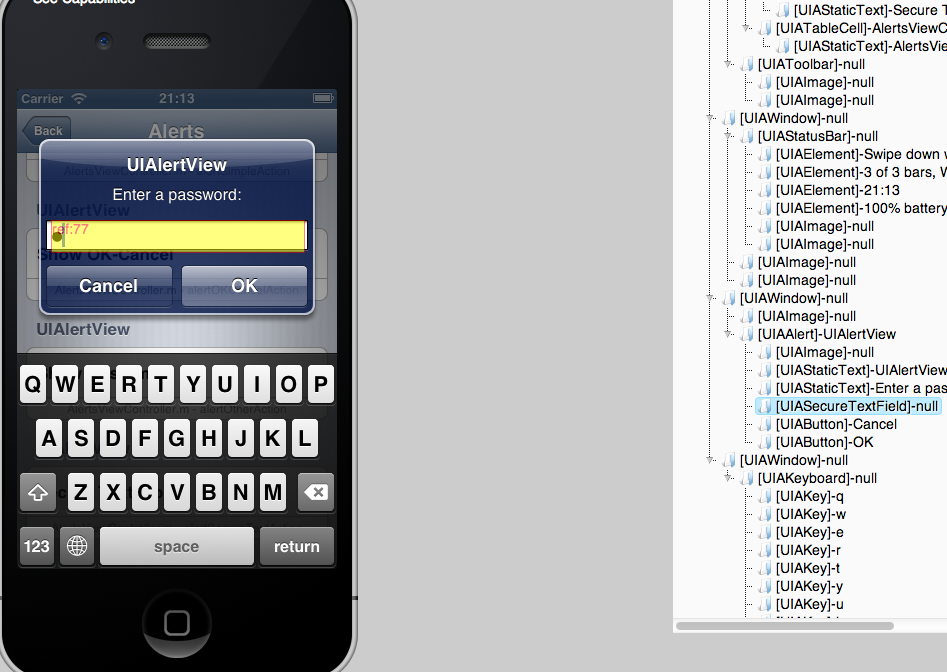

<html>

<head>
    <meta charset='utf-8'/>
    <meta http-equiv="X-UA-Compatible" content="chrome=1"/>
    <meta name="description" content="ios-driver : IOS native app automation"/>
    <link href="stylesheets/prettify.css" type="text/css" rel="stylesheet"/>
    <script type="text/javascript" src="javascripts/prettify.js"></script>
    <link rel="stylesheet" type="text/css" media="screen" href="stylesheets/stylesheet.css">

    <title>ios-driver</title>
<script type="text/javascript">

  var _gaq = _gaq || [];
  _gaq.push(['_setAccount', 'UA-38099992-1']);
  _gaq.push(['_trackPageview']);

  (function() {
    var ga = document.createElement('script'); ga.type = 'text/javascript'; ga.async = true;
    ga.src = ('https:' == document.location.protocol ? 'https://ssl' : 'http://www') + '.google-analytics.com/ga.js';
    var s = document.getElementsByTagName('script')[0]; s.parentNode.insertBefore(ga, s);
  })();

</script>
</head>

<body onload="prettyPrint()">

<!-- HEADER -->
<div id="header_wrap" class="outer">
    <header class="inner">
        <a id="forkme_banner" href="https://github.com/freynaud/ios-driver">View on GitHub</a>

        <h1 id="project_title">ios-driver</h1>

        <h2 id="project_tagline">IOS automation for native, hybrid and mobile web.</h2>

        <div id="menu">
            <ul>
                <li><a href="index.html" id="home">Home</a></li>
                <li><a href="setup.html" id="setup">Setup</a></li>
                <li><a href="inspector.html" id="inspector">Inspector</a></li>
                <li class="active"><a href="native.html" id="native">Native</a></li>
                <li><a href="safari.html" id="safari">Safari</a></li>
                <li><a href="hybrid.html" id="hybrid">Hybrid</a></li>
                <li><a href="bug.html" id="bug">Report a bug</a></li>
            </ul>
        </div>


        <section id="downloads">
            <a class="zip_download_link"
               href="https://s3-eu-west-1.amazonaws.com/ios-driver/ios-server-0.5.0.jar">Download 0.5.0</a>
        </section>
    </header>
</div>

<!-- MAIN CONTENT -->
<div id="main_content_wrap" class="outer">
    <section id="main_content" class="inner">

        <lu>
            <li><a href="#firstTest">Writing the first test</a></li>
            <li><a href="#l10n">Handling localized apps</a></li>
            <li><a href="#locator">Element locators</a></li>
            <li><a href="#debugElement">Element debug info</a></li>
            <li><a href="#advAlert">Adv. alert handling</a></li>
            <li><a href="#params">Server parameters</a></li>
            <li><a href="#rawJS">Raw instruments script snipets</a></li>
            <li><a href="#augment">ios-driver extensions</a></li>
        </lu>
        <h3 id="firstTest">Writing the first test for native ios apps</h3>

        <p>Make sure you've been through the  <a href="setup.html" id="setup2">setup</a> page and that all
            the requirements are met</p>

        <p>Start the server and connect the Intl moutains demo app from Apple through the following command</p>
<pre>
$java -jar ios-server-0.5.0.jar -aut ~/Documents/build/InternationalMountains.app -port 4444
    </code></pre>

        <p>The following code starts the app, finds some elements, clicks on the first element, prints some text, takes a screenshot and
            quits.</p>

<pre class="prettyprint" >
public static void main(String[] args) throws MalformedURLException {
    // create a selenium desiredCapabilities object with the right values.
    DesiredCapabilities cap = IOSCapabilities.iphone("InternationalMountains", "1.1");
    // start the application
    RemoteWebDriver driver = new RemoteWebDriver(new URL("http://localhost:4444/wd/hub"), cap);

    // check that the 9 mountains of the app are there.
    List cells = driver.findElements(By.className("UIATableCell"));
    Assert.assertEquals(9,cells.size());

    // get the 1st mountain
    WebElement first = cells.get(0);
    first.click();

    // take a screenshot using the normal selenium api.
    TakesScreenshot screen =(TakesScreenshot)new Augmenter().augment(driver);
    File ss = new File("screenshot.png");
    screen.getScreenshotAs(OutputType.FILE).renameTo(ss);
    System.out.println("screenshot take :"+ss.getAbsolutePath());

    // access the content
    By selector = By.xpath("//UIAStaticText[contains(@name,'climbed')]");
    WebElement text = driver.findElement(selector);
    System.out.println(text.getAttribute("name"));

    // end the test
    driver.quit();
}
</pre>

        <p>will print out :</p>

<pre>
Mountain 1 was first climbed on 29 May 1953 and has a height of 8,848 meters
</pre>

        <p>and you now have a screenshot of the old mountain details :</p>
        


        <h3 id="l10n">Native tests and localization</h3>

        <p>IOS automation is very content based. There are no IDs like for web pages. This makes testing of
            localized pages a bit trickier. Fortunately the localization data is embedded into the
            app, so the server can access it if you know the key for the content. </p>
        <p> In the previous example, the app started in the default language, English and the locator is
            hardcoded to English. Let's start it in Chinese, and make the test content free.</p>

        <p> To specify the language : </p>


<pre>

    DesiredCapabilities cap = IOSCapabilities.iphone("InternationalMountains", "1.1");
    cap.setCapability(IOSCapabilities.LANGUAGE,"zh");

</pre>


        <p> and make the locator content free : </p>

<pre>
    // access the content
    By contentFree = By.xpath("//UIAStaticText[matches(@name,l10n('sentenceFormat'))]");
    WebElement text = driver.findElement(contentFree);


</pre>


        <p>The complete test code is now content free, and you can switch between en, fr and zh without having
            to maintain your own localization dictionary. You can now start building your generic page objects,
            and focus on the functionality rather than the content. </p>

        Complete code for zh :
<pre class="prettyprint" >


public static void main(String[] args) throws MalformedURLException {
    // create a selenium desiredCapabilities object with the right values.
    DesiredCapabilities cap = IOSCapabilities.iphone("InternationalMountains", "1.1");
    cap.setCapability(IOSCapabilities.LANGUAGE,"zh");

    // start the application
    RemoteWebDriver driver = new RemoteWebDriver(new URL("http://localhost:4444/wd/hub"), cap);

    // check that the 9 mountains of the app are there.
    List<WebElement> cells = driver.findElements(By.className("UIATableCell"));
    Assert.assertEquals(9,cells.size());

    // get the 1st mountain
    WebElement first = cells.get(0);
    first.click();

    // take a screenshot using the normal selenium api.
    TakesScreenshot screen =(TakesScreenshot)new Augmenter().augment(driver);
    File ss = new File("screenshot-zh.png");
    screen.getScreenshotAs(OutputType.FILE).renameTo(ss);
    System.out.println("screenshot take :"+ss.getAbsolutePath());

    // access the content
    By contentFree = By.xpath("//UIAStaticText[matches(@name,l10n('sentenceFormat'))]");
    WebElement text = driver.findElement(contentFree);
    System.out.println(text.getAttribute("name"));

    // end the test
    driver.quit();
    }
</pre>

        will print out :
<pre>
      screenshot take :/Users/freynaud/Documents/workspace/ios-driver/screenshot-zh.png
      山 1 是8,848米高。它第一次攀登了在29 May 1953。
</pre>

        <p>and produce the following screenshot :</p>

        


        <p>The previous example had some "magic" values. UIATableCell, UIAStaticText, sentenceFormat. If you're
            the developer of the app, those value will make sense. If you're not, you can use the inspector to
            find them. The inspector allows you to have the 'inspect element' feature you use to write a selenium
            web test. Read more about it here : <a href="inspector.html" id="inspector2">Inspector</a></p>


        <h3 id="locator">Creating locators :</h3>
        <p>First, have a look at the <a href="inspector.html">inspector</a>, it will give you a lot of information about the
        internals of the application under test.</p>

        <p>UIAutomation elements don't have id. You need to use some of their other properties to
            identify them.The webdriver protocol isn't meant to be used for non-web applications, so
            there is a bit of mapping involved.</p>


        <h5 >name, value, label</h5>
        <p>are mapped to linkText and partialLinkText</p>
        <pre class="prettyprint">

            By b = By.linkText("name=theName");
            WebElement element = driver.findElement(b);

            By b = By.linkText("value=theValue");
            WebElement element = driver.findElement(b);

            By b = By.linkText("label=theLabel");
            WebElement element = driver.findElement(b);

        </pre>

        <p>partial/ regex matches are achieved using partialLinkText</p>

        <pre class="prettyprint">
            By b = By.partialLinkText("name=portionOfTheName");
            WebElement element = driver.findElement(b);

            // or regex.
            By b = By.partialLinkText("name=portion(.*)Name");
            WebElement element = driver.findElement(b);

            // and can also handle localization
            By b = By.partialLinkText("name=l10n('yourContentKey')");
            WebElement element = driver.findElement(b);

        </pre>

        <h5>UIAccessibilityIdentification</h5>

        <p>The closest thing to id would be <a href='http://developer.apple.com/library/ios/#documentation/uikit/reference/UIAccessibilityIdentification_Protocol/Introduction/Introduction.html' >
            UIAccessibilityIdentification</a>. Therefore this is what is mapped to id.The following
        3 criterias are similar :</p>

        <pre class="prettyprint">

            By b = By.id("signInButton");
            WebElement element = driver.findElement(b);

            By b = By.name("signInButton");
            WebElement element = driver.findElement(b);

            By b = By.linkText("name=signInButton");
            WebElement element = driver.findElement(b);

        </pre>

        <h5>type</h5>
       <p>selection based on the element type are done with class name.</p>
        <pre class="prettyprint">
            By b = By.className("UIAButton");
            WebElement element = driver.findElement(b);
        </pre>

        <h5>xpath</h5>
       <p>xpath2 is the most powerful mechanism for selector on ios-driver.It allows to combine all
       the criteria above.</p>

        <p>To match ""山 1 是8,848米高。它第一次攀登了在29 May 1953" from the Intl mountain demo app for
        instance you can use :</p>
        <pre class="prettyprint">

            By b =  By.xpath("//*[matches(@name,l10n('meterFormat'))]");
            // or
            By b =  By.xpath("//UIAStaticText[matches(@name,l10n('meterFormat'))]");
            // or
            By b =  By.xpath("//UIAStaticText[@name,'山 1 是8,848米高。它第一次攀登了在29 May 1953')]");
            // or
            By b =  By.xpath("//UIAStaticText[contains(@name,'山')]");


       </pre>

        <p>will match any UIElement with name matching the value behind the meterFormat content key.</p>


        <h3 id="debugElement">Finding debug information about a native WebElement</h3>

        <p> It is possible to get all the information about a native WebElement and its children using
        the getAttribute method and querying the 'tree' attribute.</p>

          <pre class="prettyprint">

@Test
public void findElementByTagName() throws InterruptedException, JSONException {
    WebElement element = driver.findElement(By.tagName("UIATableCell"));
    Assert.assertEquals(element.getAttribute("name"), "Buttons, Various uses of UIButton");
    JSONObject tree = new JSONObject(element.getAttribute("tree"));
    System.out.println(tree.toString(2));
}
       </pre>

        will print :

        <pre>

{
  "ref": 4,
  "label": null,
  "value": null
  "name": "Buttons, Various uses of UIButton",
  "type": "UIATableCell",
  "children": [{
    "ref": 5,
    "type": "UIAStaticText",
    "value": "Buttons, Various uses of UIButton"
    "label": "Buttons, Various uses of UIButton",
    "name": "Buttons, Various uses of UIButton",
    "rect": {
      "origin": {
        "x": 0,
        "y": 64
      },
      "size": {
        "height": 44,
        "width": 320
      }
    },
  }],
  "rect": {
    "origin": {
      "x": 0,
      "y": 64
    },
    "size": {
      "height": 44,
      "width": 320
    }
  }
}
06:12:637 WARNING DeviceManagerService$1.run  running to false.
06:13:937 WARNING DeviceManagerService.stopDetection  waiting for the listener thread to finish

        </pre>

        <h3 id="advAlert">Advance Alert handling</h3>

        <p>Native alerts are like any other native element, they're part of the tree and are
            composed of UIAButton, UIAStaticText etc.alert can be inspected with the inspector</p>
        

        <p>as such, you can use regular calls to interact with the alert :

<pre class="prettyprint">

@Test
public void enterPasswordInAlert()  {
    // if no alert, next line throws a NoSuchElementException
    WebElement alert = driver.findElement(By.className("UIAAlert"));

    // browse inside the alert.
    alert.findElement(By.className("UIASecureTextField")).sendKeys("password");
    alert.findElement(By.xpath("//UIAButton[@name='OK']")).click();
}
</pre>
        <h3 id="params" >Starting parameters :</h3>

        <p>The map of parameters ( the DesiredCapabilities object ) accept a set of parameters that
            will
            define the configuration the simulator will start with:</p>

        <lu>
            <li>device: iphone (default) | ipad</li>
            <li>language: en | fr | zh . The list of supported languages depends on your
                application.
            </li>
            <li>locale: en_GB ...</li>
            <li>CFBundleName : UIACatalog | Safari ... name for your application, specified in its
                info.plist
            </li>
            <li>CFBundleVersion : {string} version of the app to start ( optional )</li>
            <li>variation: (Regular | Retina35 | Retina4) for iphone. (Regular | Retina) for ipad
            </li>
            <li>simulator : true</li>
            <li>ios.switches : an array of system parameters that will be passed to the app when it
                is launched. Useful if the app can be configured to point to a QA envt with system
                variable for instance.
            </li>
            <li>sdkVersion : {string} 5.0 | .. | 6.1</li>
            <li> TODO doc : magic prefix plist_</li>
        </lu>

        <h3 id="rawJS">Executing raw instruments JS :</h3>

        <p>The underlying framework running the native part is instruments. Instruments tests are
            written in JS. It's possible to execute instruments scripts directly by using the default
        webdriver client. The arguments and returned objects follow the webdriver convention.</p>

        <p>For example :</p>
<pre class="prettyprint" >

/**
*  instruments scripts can return a list of element. the elements can be used later on in the tests.
*/
@Test
public void testShouldBeAbleToReturnAnArrayOfWebElements() {
    WebDriver driver = new RemoteWebDriver(...);
    // ...
    List<WebElement> items = (List<WebElement>) executeScript("return UIATarget.localTarget().frontMostApp().windows()");
    assertEquals(items.size(), 2);
    driver.quit();
}

/**
* Elements can be passed as parameter for the raw instruments scripts.
*/
@Test
public void testShouldBeAbleToPassAWebElementAsArgument() {
    WebDriver driver = new RemoteWebDriver(...);
    // ...
    WebElement cell = driver.findElement(By.xpath("//UIATableCell[@name='" + buttonsName + "']"));
    String res = (String) executeScript("return arguments[0].type();", cell);
    assertEquals(res, "UIATableCell");
    driver.quit();
}

private Object executeScript(String script, Object... args) {
    return ((JavascriptExecutor) driver).executeScript(script, args);
}
</pre>

<p>Some instruments JS methods do not work as expected and have been overwritten in ios-driver. You
can find the documentation about those differences and all the additional functions can be found
 <a href="jsdoc/index.html">here.</a></p>


<h3 id="augment">ios-driver specific methods.</h3>

<p>Some ios specific methods do not map directly to the webdriver ones. For those, you can use the
Augmenter class to add the missing functionalities.</p>


<h5 >Configurable</h5>

<p>Allows to change the configuration of a command at runtime. For instance you can switch between
native and atoms based clicks on an hybrid app doing the following :</p>

<pre class="prettyprint" >
// cast to the interface we need.
Configurable config = IOSDriverAugmenter.augment(driver);

// find the current state
Map<String,Object> conf = config.getConfiguration(WebDriverLikeCommand.CLICK);
System.out.println("default:"  + conf);

// change to use JS based events.
config.setConfiguration(WebDriverLikeCommand.CLICK, "nativeEvents", false);

//... do some testing

// use native events again.
config.setConfiguration(WebDriverLikeCommand.CLICK, "nativeEvents", true);
</pre>

<p>will print <pre>default:{nativeEvents=true}</pre> , then will disable native events for the click
methods, and activate them back. Native event are slower, but much accurate, so this is typically
done to go through a flow quick, and then activate them again when you reach the page that needs to
be tested.</p>
<p>protocol call :</p>
<pre class="prettyprint">
// set the configuration for a command
"POST", "/session/:sessionId/ios-driver/configure/command/:command"
// get the configuration for a command
"GET", "/session/:sessionId/ios-driver/configure/command/:command"
</pre>
<h5 >IOSSearchContext</h5>

<p>Criteria based search instead of By.</p>

<h5 >ElementTree</h5>

<p>Gives access to the logElementTree function from instruments. This method also takes a screenshot
of the app, and loads the localization files.</p>

    </section>
</div>
<!-- FOOTER  -->
<div id="footer_wrap" class="outer">
    <footer class="inner">
        <p class="copyright">ios-driver maintained by <a
                href="https://github.com/freynaud">freynaud</a></p>

        <p>Published with <a href="http://pages.github.com">GitHub Pages</a></p>
    </footer>
</div>
</body>
</html>
